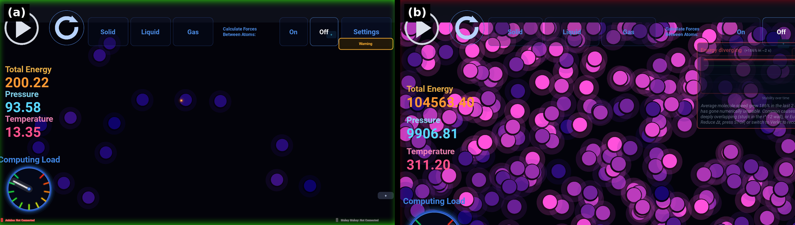

MD-Kivy: An Interactive Touchscreen Molecular Dynamics
Visualization for STEM Education
1The University of Texas at Austin 2Texas Advanced Computing Center

Abstract
Traditional molecular dynamics software targets researchers or individual desktop users, leaving a distinct gap for shared interactive museum exhibits and public outreach tools. MD-Kivy fills this gap by combining a qualitative Lennard-Jones simulation, competitive two-player gameplay, and multi-device physical controller support in a single open-source application designed for shared public displays. Direct interaction with the simulation allows learners to connect microscopic particle motion with emergent macroscopic gas behaviors. In single-player exploration mode, learners adjust Lennard-Jones parameters, molecule count, simulation speed, and timestep while observing particle motion in real time. By toggling intermolecular forces, users can compare ideal-gas-like motion with van der Waals-like interactions. Molecules are color-coded by instantaneous speed, and a live computational-load display shows how pairwise force calculations scale with molecule count. In two-player battle mode, users race to spawn molecules on opposite sides of a shared screen. Victory removes a central divider and initiates a free expansion event, with molecules flooding into the newly available volume. The platform supports optional physical controllers, including Arduino accelerometers that map physical shaking to kinetic energy injection and Makey Makey conductive-pad boards for hands-on input. To support two identical Makey Makey controllers simultaneously, MD-Kivy reads raw Linux input events from each device rather than relying on the merged keyboard event stream. MD-Kivy runs its physics and rendering loops at 30 Hz using Kivy OpenGL canvas instructions without an external game engine. The system is openly available and designed for deployment on shared displays in museums and science centers.
System Overview
The simulation core integrates motion with Velocity-Verlet (or first-order Euler, for contrast), computes vectorised Lennard-Jones forces with NumPy, and resolves collisions through a spatial cell-list. Solid, liquid, and gas presets initialize hexagonal close-packed lattices or free-flying ensembles, and a gentle Berendsen thermostat keeps lattices stable. Every frame publishes energy, temperature, and pressure to the interface.

Interaction Modes
Sandbox
Tap to spawn molecules, drag sliders for gravity, ε, σ, timestep, and speed, and toggle force visualization to watch the Lennard-Jones potential at work.
Battle Mode
Two players race to heat their side of the arena to 373.15 K. The fastest time wins and feeds a persistent leaderboard - ideal for outreach events and classroom competitions.
Physical Controllers
Makey Makey boards act as per-player controllers, and an Arduino accelerometer literally shakes energy into the system over USB or an ESP-NOW Wi-Fi bridge.
Accuracy Awareness
A stability badge warns when the integrator choice, timestep, or molecule count threatens energy conservation, linking visual behavior to numerical methods.

The Physics
Pairwise interactions follow the Lennard-Jones 12-6 potential with a 2.5σ cutoff. The force curve below shows the repulsive wall, the equilibrium minimum at r = 21/6σ, and the attractive tail that drives condensation.



Hardware Setup
The optional hardware layer uses an Arduino with an MPU6050 accelerometer (wired USB serial, or wireless via two ESP boards bridged with ESP-NOW) and one or two Makey Makey boards for touch input. Sketches, wiring notes, and step-by-step setup guides live in the hardware/ folder of the repository.

Citation
@misc{brund2026mdkivy,
title = {MD-Kivy: An Interactive Touchscreen Molecular Dynamics
Visualization for STEM Education},
author = {Brund, Anastasiia A. and Author, Second and Author, Third and Author, Fourth},
year = {2026},
url = {https://github.com/AnastasiiaBerezovska/MD-Kivy}
}
Acknowledgments
Developed at The University of Texas at Austin with support from the Texas Advanced Computing Center.